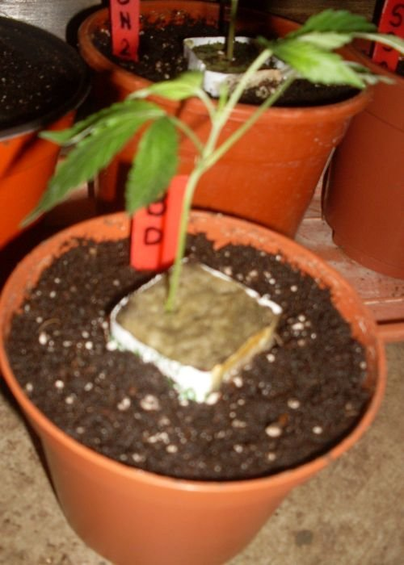
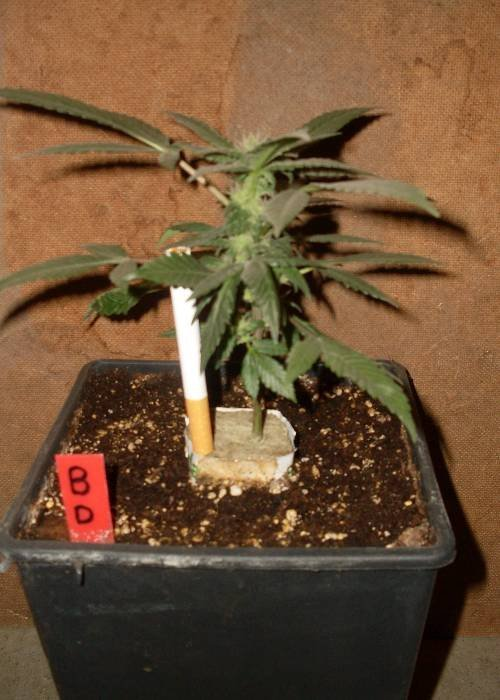
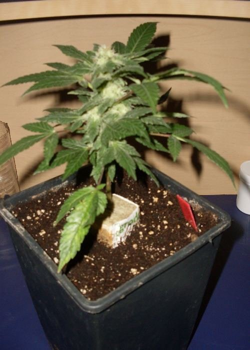
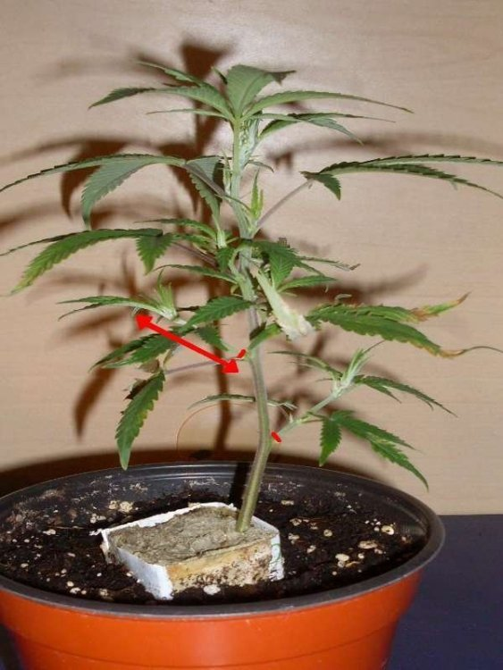
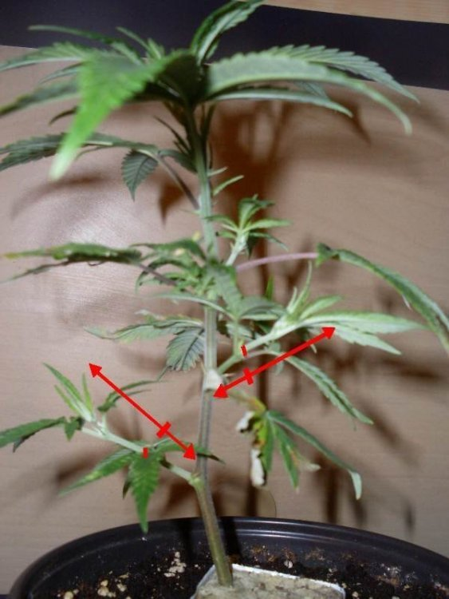
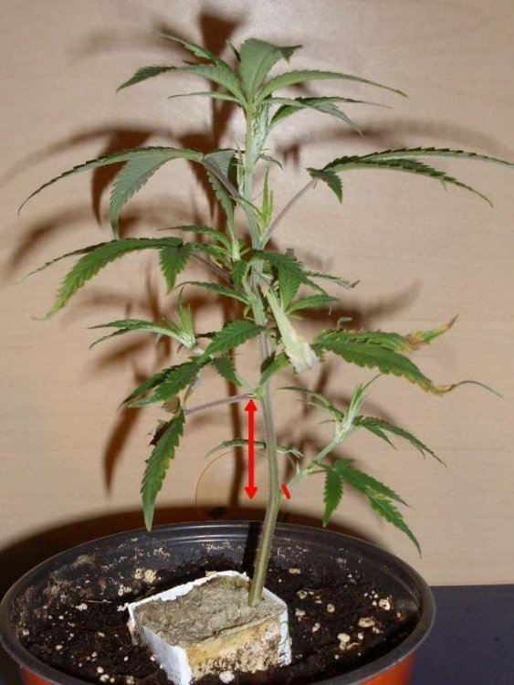
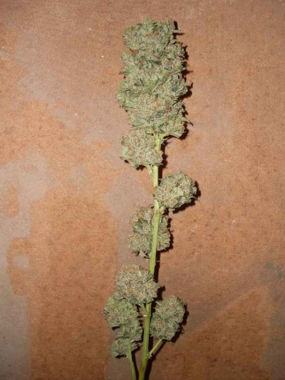
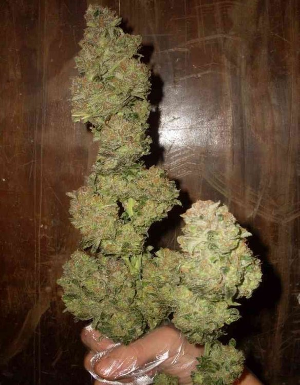
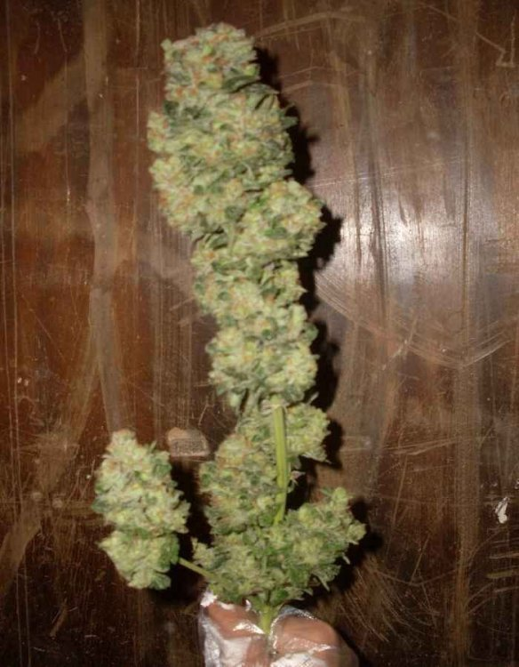

One Bud
TECHNIQUE 1
La bouture mise en terre (CROI+0):
La même à CROI+1 et FLO+27:
Et à FLO+34:
Info
Cette bouture n'a subit aucun taillage. Remarquez que la floraison n'est pas autant avancé à FLO+33 que chez une plante normale. C'est tout simplement à cause du temps d'enracinement et de formation que nous décomptons dans les jours de FLO(12/12), alors que chez une plante normale, l'enracinement et la formation se décompte en Croissance(18/24). Nous pouvons donc estimer que ce One bud à FLO+34 est en réalité à FLO+20~24.
Technique 2
LE TAILLAGE D'UN ONE BUD
Il y a plusieurs façons de tailler un One bud. Cela varie en conséquence du squelette de la plante. Ce qu'il faut retenir, c'est que les branches secondaires doivent être assez courtes (pour que, quand elles deviendront des têtes, elles se collent au tronc) et que les étages doivent être assez serrés (pour que les têtes puissent se rejoindre et n'en former qu'une seule). Donc à partir du moment où l'on a taillé les branches secondaires à la base du tronc d'un étage, il sera forcément obligatoire de tailler toutes les branches secondaires à la base du tronc de tout les étages en dessous, si l'on veut vraiment obtenir un ONE bud.
a
Si l'une des branches secondaires du tronc principal est trop longue, on la coupe à la base du tronc.
On peut voir sur l'image que quand cette branche secondaire trop longue deviendra une tête, il sera impossible qu'elle se colle au tronc principal et rejoigne les autres têtes du dessus.
b
Si l'une des branches secondaire du tronc principal est trop longue, mais comporte plusieurs nœuds, dont un, suffisamment proche du tronc principal, la coupe doit se faire juste au dessus de ce nœud.
On peut estimer sur cette image que si ces branches principales développent une tête à partir de leur premier nœud, la tête pourra donc se coller au tronc au fur et à mesure qu'elle grossira et pourra rejoindre les autres têtes du dessus.
C
Si l'écart entre deux étages est trop important, il faut couper les branches secondaires de l'étage du bas en question, puis toutes les branches secondaires suivantes du dessous.
On peut voir sur l'image que si la branche secondaire développe une tête, même à partir du premier nœud (comme le second est trop long), la tête ne pourra pas rejoindre les autres du dessus.
C'est pour cela que l'on peut obtenir plusieurs formes de One bud.
Si vous avez seulement tenu compte du point A et B.
Si vous avez tenu compte des points A, B et C.(en enlevant la petite tête d'en bas, à gauche)
Si vous n'avez pas tenu compte des points A, B et C.